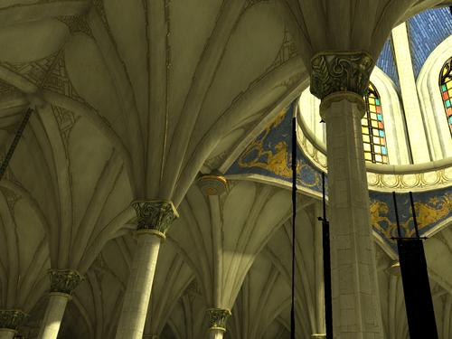

Lightsprint SDK adds global illumination to Gamebryo 2.6.
Prerequisites
- Emergent's
Gamebryo 2.6 must be installed
- Emergent's
Gamebryo Global Illumination Package 1.0.0 must be installed
- Lightsprint SDK with Gamebryo 2.6 integration. To save your time, we send you Lightsprint SDK preconfigured for your engine. If we make mistake and your integration is missing, please let us know.
Features
- all Lightsprint samples (lightmap building, realtime radiosity etc) support Gamebryo .gsa scenes
- lightmap building honours all Gamebryo 2.6 conventions, outputs are ready for immediate use in Gamebryo 2.6 games
- quality controlled by single number, optional additional settings (HDR or LDR environment map etc)
- realtime GI in Gamebryo scenes can be displayed using Lightsprint renderer
- all data processed in native Gamebryo format in memory, no conversion/duplication/saving to disk
- full integration source code included
Getting started
- see off-line lightmap building
- enter
samples/BuildLightmaps
- run
Gamebryo2.6_Build_Tutorial.bat to build GI lightmaps for Gamebryo tutorial scene
- run
Gamebryo2.6_SceneApp_Tutorial.bat to view GI in Gamebryo SceneApp sample application
|

|
- see realtime global illumination
- enter
samples/BuildLightmaps
- run
Gamebryo2.6_Realtime_Tutorial.bat
- move mouse with left button pressed to look around until you see light icon
- select light by left clicking its icon (or click "light 0" in Scene tree, then right click viewport for focus)
- arrows or wsadqzxc to move light (or camera)
- in "Light properties", change light type from point to spot for stronger color bleeding effect
- select from Scene tree / Static objects / context menu / Build LDM / 1000 / 128x128, takes a minute, increases realtime GI quality
|
|
- see source code
- open src/Lightsprint.vs2005.sln or src/Lightsprint.vs2008.sln
- see for example lightmap building source code in BuildLightmaps project, feel free to customize it to match your needs
- see other samples
- see video tutorial at https://pulse.emergent.net/index.php?autocom=downloads&showfile=287
- see GI Package documentation, usually installed at
C:\Emergent\Integrations\Gamebryo_GlobalIllumination_1.0.0\Documentation\HTML\Gamebryo_GI.chm
|
|
Misc
 1.9.7
1.9.7